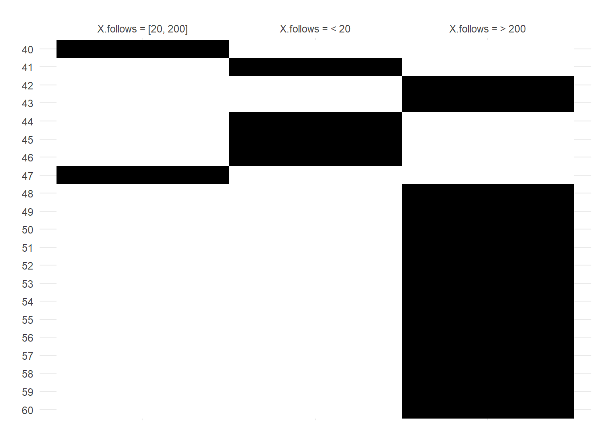
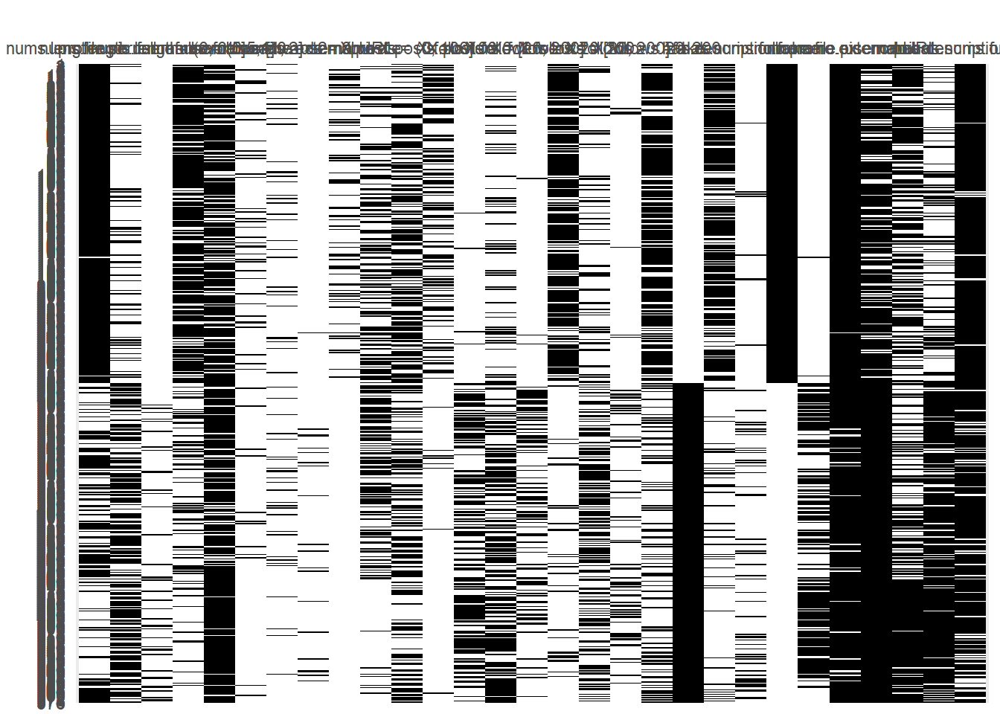
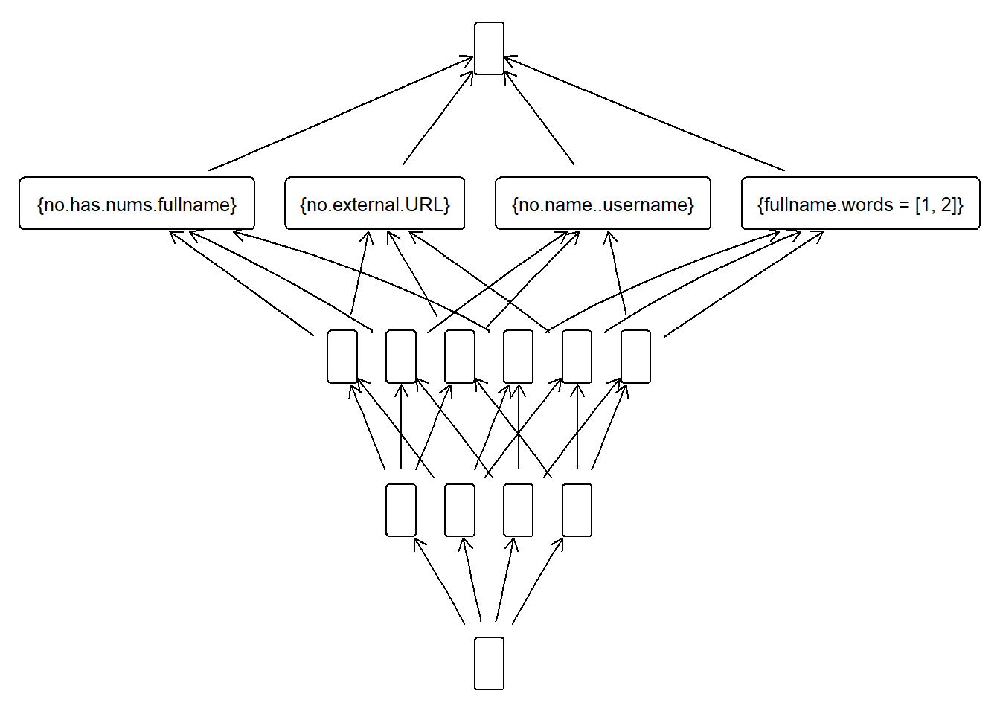

library(fcaR)
library(dplyr)
library(magrittr)5 FCA
El Análisis Formal de Conceptos (FCA) es una técnica matemática utilizada para descubrir y visualizar estructuras de datos. Se basa en la teoría de conjuntos y la lógica algebraica para identificar patrones y relaciones entre datos en un contexto formal. Un contexto formal consta de un conjunto de objetos, un conjunto de atributos y una relación binaria que indica qué objetos poseen qué atributos.
En el contexto de análisis de datos de cuentas de Instagram, el FCA nos permite identificar grupos de cuentas que comparten características comunes, lo cual es valioso para detectar patrones de comportamiento, distinguir cuentas auténticas de cuentas falsas, y explorar otros aspectos relevantes.
dataset <- read.csv("datasets/train.csv")5.1 Pre-processing
Al igual que para las reglas de asociación, necesitamos hacer un pre-procesado de los datos, ya que para aplicar FCA necesitamos que nuestras variabes sean binarias.
Algunas de ellas ya lo son, pero las que no lo son, tendremos que hacerles el proceso de escalado (scaling).
Vamos a empezar convirtiendo las variables description.length y nums.length.fullname como antes a has.description y has.nums.fullname, ya que creemos que es la información importante que contienen estas variables.
dataset <- dataset %>%
mutate(has.description=as.numeric(description.length > 0)) %>%
mutate(has.nums.fullname=as.numeric(nums.length.fullname > 0))
dataset$description.length <- NULL
dataset$nums.length.fullname <- NULLAhora, para todas las varaibles binarias, vamos a crear su simétrica. Es decir, si tenemos la variable fake que representa que una cuenta es falsa, creamos la varaible no.fake, que representa que una cuenta no es falsa.
¿Por qué simplemente no tener una variable y el valor 1 significa la afirmación de la condición y valor 0 la negación?
Cuando hicimos el objeto transaccional para aplicar el algoritmo apriori del paquete arules, se nos crearon a partir de cada varaible binaria, dos variables. Por ejemplo, para fake, se nos creó fake=1 y fake=0. Es el mismo caso que tenemos ahora, solo que en aquel caso se hizo automáticamente, y ahora tenemos que hacerlo nosotros mismos.
dataset <- dataset %>%
mutate(no.fake = as.numeric(!fake)) %>%
mutate(no.profile.pic = as.numeric(!profile.pic)) %>%
mutate(no.name..username = as.numeric(!name..username)) %>%
mutate(no.external.URL = as.numeric(!external.URL)) %>%
mutate(no.private = as.numeric(!private)) %>%
mutate(no.has.description = as.numeric(!has.description)) %>%
mutate(no.has.nums.fullname = as.numeric(!has.nums.fullname))Esto se hace para que en nuestros conceptos, podamos tener ambos casos, la afirmación y la negación. Con el caso de fake, si solo dejásemos la variable, tendríamos conceptos en los que tenemos que se cumple “fake”, pero el no cumplimiento de fake no se representaría y no podríamos formar conceptos con cuentas que no son falsas.
Para las 5 variables no binarias que tenemos, las vamos a escalar a variables nominales.
¿Por qué?
Debido a que vamos a pasarlas a intervalos, y dado el valor de una variable, esta solo estará en uno de los intervalos, y justamente esto lo conseguidmos con las variables nominales.
Para ello, antes tenemos que crear los intervalos. Vamos a usar los mismos que usamos para aplicar las reglas de asociación:
- nums.length.username
- “0”
- “(0, 0.5]”
- “(0.5, 1]”
dataset <- dataset %>%
mutate(nums.length.username=
ifelse(nums.length.username == 0,
"0", ifelse(nums.length.username <= 0.5,
"(0, 0.5]", "(0.5,1]")))- fullname.words
- “0”
- “[1, 2]”
- “> 2”
dataset <- dataset %>%
mutate(fullname.words =
ifelse(fullname.words == 0,
"0", ifelse(fullname.words <= 2,
"[1, 2]", "> 2")))- X.posts
- “0”
- “(0, 100]”
- “> 100”
dataset <- dataset %>%
mutate(X.posts =
ifelse(X.posts == 0,
"0", ifelse(X.posts <= 100,
"(0, 100]", "> 100")))- X.followers
- “< 20”
- “[20, 200]”
- “> 200”
dataset <- dataset %>%
mutate(X.followers =
ifelse(X.followers < 20,
"< 20", ifelse(X.followers <= 200,
"[20, 200]", "> 200")))- X.follows
- “< 20”
- “[20, 200]”
- “> 200”
dataset <- dataset %>%
mutate(X.follows =
ifelse(X.follows < 20,
"< 20", ifelse(X.follows <= 200,
"[20, 200]", "> 200")))Vamos ahora a crear nuestro objeto FormalContext del paquete fcaR:
fc <- FormalContext$new(dataset)Hemos tenido que crear el objeto antes de terminar el pre-processing, ya que para las variables no binarias, es el objeto FormalContext el que nos proporciona los mecanismos de escalado.
Vamosa escalar las 5 variales no binarias que hemos convertido a intervalos, mediante la función scale del objeto FormalContext:
fc$scale(type = "nominal", "nums.length.username")
fc$scale(type = "nominal", "X.posts")
fc$scale(type = "nominal", "X.followers")
fc$scale(type = "nominal", "X.follows")
fc$scale(type = "nominal", "fullname.words")Hemos pasado de tener 12 variables, a tener:
fc$attributes [1] "profile.pic" "nums.length.username = (0, 0.5]"
[3] "nums.length.username = (0.5,1]" "nums.length.username = 0"
[5] "fullname.words = [1, 2]" "fullname.words = > 2"
[7] "fullname.words = 0" "name..username"
[9] "external.URL" "private"
[11] "X.posts = (0, 100]" "X.posts = > 100"
[13] "X.posts = 0" "X.followers = [20, 200]"
[15] "X.followers = < 20" "X.followers = > 200"
[17] "X.follows = [20, 200]" "X.follows = < 20"
[19] "X.follows = > 200" "fake"
[21] "has.description" "has.nums.fullname"
[23] "no.fake" "no.profile.pic"
[25] "no.name..username" "no.external.URL"
[27] "no.private" "no.has.description"
[29] "no.has.nums.fullname" Con estos atributos estamos preparados para empezar a crear conceptos y estudiarlos para extraer conocimiento de los datos.
5.2 Primeros pasos
Vamos a observar como hemos transformado las variables que tenían muchos valores, tomando de ejemplo, X.follows:
plot(fc[40:60][,c(17, 18, 19)])
Hemos tomado las observaciones de la 40 a la 60 y las columnas que corresponden con X.follows. Como se puede apreciar, la clasificación es exclusiva, si una persona sigue a a más de 200 personas, entonces no está en “[20, 200]” ni en “< 200”, que es justo lo que pensamos que nos dará los mejores conceptos.
Veamos el contexto formal completo:
plot(fc)
Esto básicamente representa toda la información que tenemos, pero obviamente de esta forma no podemos deducir nada.
Como hemos visto los atributos son todas nuestras variables
attr_ig <- fc$attributes
attr_ig [1] "profile.pic" "nums.length.username = (0, 0.5]"
[3] "nums.length.username = (0.5,1]" "nums.length.username = 0"
[5] "fullname.words = [1, 2]" "fullname.words = > 2"
[7] "fullname.words = 0" "name..username"
[9] "external.URL" "private"
[11] "X.posts = (0, 100]" "X.posts = > 100"
[13] "X.posts = 0" "X.followers = [20, 200]"
[15] "X.followers = < 20" "X.followers = > 200"
[17] "X.follows = [20, 200]" "X.follows = < 20"
[19] "X.follows = > 200" "fake"
[21] "has.description" "has.nums.fullname"
[23] "no.fake" "no.profile.pic"
[25] "no.name..username" "no.external.URL"
[27] "no.private" "no.has.description"
[29] "no.has.nums.fullname" Los objetos son simplemente las observaciones, las filas de nuestro dataset, cada cuenta de Instagram que tenemos.
obj_ig <- fc$objects
str(obj_ig) chr [1:576] "1" "2" "3" "4" "5" "6" "7" "8" "9" "10" "11" "12" "13" "14" ...Vamos a calcular manualmente el cierre de algunos atributos, para sacar las primeras conclusiones:
- Cierre de fake
S <- Set$new(attr_ig)
S$assign(fake = 1)
fc$intent(fc$extent(S)){fake, no.external.URL}¿Qué significa esto?
Todas las cuentas que son falsas, no tienen un enlace externo en el perfil. Lo que hemos hecho es calcular el cierre de “fake”, que es “fake, no.external.URL”.
Vamos a hacer ahora el cierre de external.URL.
- Cierre de no.external.URL
S <- Set$new(attr_ig)
S$assign(external.URL = 1)
fc$intent(fc$extent(S)){profile.pic, external.URL, no.fake}Todas las cuentas que tienen un enlace externo, también tienen foto de perfil, y son reales. Vemos viendo el potencial que tiene el cierre, extra un conocimiento valioso.
5.3 Generando conceptos
Vamos a generar todos los conceptos:
fc$find_concepts()Nos han salido:
fc$concepts$size()[1] 20421Tenemos muchos conceptos. Vamos a visualizar el primero:
fc$concepts[1]A set of 1 concepts:
1: ({1, 2, 3, 4, 5, 6, 7, 8, 9, 10, 11, 12, 13, 14, 15, 16, 17, 18, 19, 20, 21, 22, 23, 24, 25, 26, 27, 28, 29, 30, 31, 32, 33, 34, 35, 36, 37, 38, 39, 40, 41, 42, 43, 44, 45, 46, 47, 48, 49, 50, 51, 52, 53, 54, 55, 56, 57, 58, 59, 60, 61, 62, 63, 64, 65, 66, 67, 68, 69, 70, 71, 72, 73, 74, 75, 76, 77, 78, 79, 80, 81, 82, 83, 84, 85, 86, 87, 88, 89, 90, 91, 92, 93, 94, 95, 96, 97, 98, 99, 100, 101, 102, 103, 104, 105, 106, 107, 108, 109, 110, 111, 112, 113, 114, 115, 116, 117, 118, 119, 120, 121, 122, 123, 124, 125, 126, 127, 128, 129, 130, 131, 132, 133, 134, 135, 136, 137, 138, 139, 140, 141, 142, 143, 144, 145, 146, 147, 148, 149, 150, 151, 152, 153, 154, 155, 156, 157, 158, 159, 160, 161, 162, 163, 164, 165, 166, 167, 168, 169, 170, 171, 172, 173, 174, 175, 176, 177, 178, 179, 180, 181, 182, 183, 184, 185, 186, 187, 188, 189, 190, 191, 192, 193, 194, 195, 196, 197, 198, 199, 200, 201, 202, 203, 204, 205, 206, 207, 208, 209, 210, 211, 212, 213, 214, 215, 216, 217, 218, 219, 220, 221, 222, 223, 224, 225, 226, 227, 228, 229, 230, 231, 232, 233, 234, 235, 236, 237, 238, 239, 240, 241, 242, 243, 244, 245, 246, 247, 248, 249, 250, 251, 252, 253, 254, 255, 256, 257, 258, 259, 260, 261, 262, 263, 264, 265, 266, 267, 268, 269, 270, 271, 272, 273, 274, 275, 276, 277, 278, 279, 280, 281, 282, 283, 284, 285, 286, 287, 288, 289, 290, 291, 292, 293, 294, 295, 296, 297, 298, 299, 300, 301, 302, 303, 304, 305, 306, 307, 308, 309, 310, 311, 312, 313, 314, 315, 316, 317, 318, 319, 320, 321, 322, 323, 324, 325, 326, 327, 328, 329, 330, 331, 332, 333, 334, 335, 336, 337, 338, 339, 340, 341, 342, 343, 344, 345, 346, 347, 348, 349, 350, 351, 352, 353, 354, 355, 356, 357, 358, 359, 360, 361, 362, 363, 364, 365, 366, 367, 368, 369, 370, 371, 372, 373, 374, 375, 376, 377, 378, 379, 380, 381, 382, 383, 384, 385, 386, 387, 388, 389, 390, 391, 392, 393, 394, 395, 396, 397, 398, 399, 400, 401, 402, 403, 404, 405, 406, 407, 408, 409, 410, 411, 412, 413, 414, 415, 416, 417, 418, 419, 420, 421, 422, 423, 424, 425, 426, 427, 428, 429, 430, 431, 432, 433, 434, 435, 436, 437, 438, 439, 440, 441, 442, 443, 444, 445, 446, 447, 448, 449, 450, 451, 452, 453, 454, 455, 456, 457, 458, 459, 460, 461, 462, 463, 464, 465, 466, 467, 468, 469, 470, 471, 472, 473, 474, 475, 476, 477, 478, 479, 480, 481, 482, 483, 484, 485, 486, 487, 488, 489, 490, 491, 492, 493, 494, 495, 496, 497, 498, 499, 500, 501, 502, 503, 504, 505, 506, 507, 508, 509, 510, 511, 512, 513, 514, 515, 516, 517, 518, 519, 520, 521, 522, 523, 524, 525, 526, 527, 528, 529, 530, 531, 532, 533, 534, 535, 536, 537, 538, 539, 540, 541, 542, 543, 544, 545, 546, 547, 548, 549, 550, 551, 552, 553, 554, 555, 556, 557, 558, 559, 560, 561, 562, 563, 564, 565, 566, 567, 568, 569, 570, 571, 572, 573, 574, 575, 576}, {})¿Qué son todos estos números?
Cada número representa una cuenta de Instagram, una observación, una fila de nuestro dataset. Si nos fijamos bien, en esta lista, apareecen todos los números del 1 al 576, y es que justamente tenemos 576 observaciones en nuestro dataset. La otra parte del concepto, es {}. Esto quiere decir que todos los objetos (todas las cuentas) tienen los atributos {} (trivial). No es un concepto útil, vamos a visualizar el que se encuentra en el punto medio:
n <- fc$concepts$size()
indice <- floor(n/2)
concepto_medio <- fc$concepts[indice]
concepto_medioA set of 1 concepts:
1: ({3, 75, 82, 113, 114, 121, 129, 152, 191, 196, 250, 254, 266, 291, 295, 297, 305, 333, 343, 351, 352, 358, 359, 360, 363, 364, 370, 380, 382, 387, 389, 393, 394, 427, 433, 440, 441, 459, 462}, {nums.length.username = (0, 0.5], fullname.words = [1, 2], private, X.posts = (0, 100], no.external.URL})Este concepto es más interesante, tenemos ciertas cuentas de Instagram que cumplen una serie de atributos.
n_cuentas <- sum(concepto_medio$extents())
attr_medio <- attr_ig[as.logical(concepto_medio$intents())]
paste0("Tenemos que ", n_cuentas, " tienen los atributos:")[1] "Tenemos que 39 tienen los atributos:"attr_medio[1] "nums.length.username = (0, 0.5]" "fullname.words = [1, 2]"
[3] "private" "X.posts = (0, 100]"
[5] "no.external.URL" Con fcaR tenemos una forma sencilla y eficiente de obtener conceptos, con los que podemos ver agrupaciones de nuestros datos, donde en nuestro caso encontramos el número de cuentas que comparten una serie de atributos.
Ahora vamos a visualizar nuestros conceptos en forma de retículo, pero para ello, vamos a crear antes un subreticulo, pues tenemos demasiados conceptos.
Vamos a crear el subreticulo de los conceptos con soporte mayor al 0.89, para asi quedarnos con pocos conceptos y poder visualizarlos:
idx <- which(fc$concepts$support() > 0.8)
sublaticce <- fc$concepts$sublattice(idx)sublaticce$plot()
Dado que lo que teníamos antes es un retículo, podemos calcular el ínfimo y el supremo de nuestro subreticulo:
fc$concepts$infimum(sublaticce)({2, 3, 4, 5, 7, 8, 11, 21, 23, 24, 30, 31, 33, 34, 36, 38, 39, 40, 43, 47, 48,
49, 52, 57, 58, 59, 60, 61, 63, 67, 68, 71, 72, 73, 74, 75, 76, 77, 78, 80,
81, 82, 84, 87, 90, 91, 92, 93, 94, 95, 96, 97, 101, 104, 109, 110, 111, 112,
113, 114, 115, 117, 121, 123, 124, 125, 127, 128, 129, 132, 133, 135, 139,
142, 144, 145, 146, 149, 151, 152, 153, 154, 155, 156, 158, 159, 161, 163,
164, 167, 169, 170, 171, 176, 178, 180, 181, 182, 186, 188, 189, 191, 192,
193, 196, 197, 198, 201, 203, 204, 207, 211, 212, 214, 216, 218, 221, 222,
223, 224, 225, 226, 227, 229, 230, 231, 232, 236, 237, 239, 240, 241, 242,
244, 245, 249, 250, 252, 253, 255, 256, 258, 260, 262, 264, 265, 266, 267,
268, 269, 270, 272, 273, 274, 275, 277, 278, 280, 281, 282, 284, 285, 286,
287, 288, 289, 290, 291, 294, 296, 297, 298, 299, 300, 301, 303, 304, 305,
306, 307, 308, 310, 311, 312, 314, 315, 316, 318, 319, 320, 321, 322, 323,
325, 327, 328, 329, 331, 333, 337, 338, 340, 341, 342, 343, 344, 345, 346,
350, 352, 353, 356, 359, 361, 362, 364, 366, 370, 371, 372, 373, 375, 376,
377, 379, 380, 381, 383, 384, 386, 387, 388, 391, 392, 393, 394, 395, 397,
398, 400, 402, 403, 404, 406, 408, 409, 410, 411, 412, 414, 416, 417, 418,
419, 420, 421, 423, 424, 426, 427, 428, 430, 431, 432, 433, 435, 437, 438,
439, 441, 444, 447, 449, 450, 454, 456, 457, 459, 460, 461, 463, 464, 466,
467, 468, 469, 470, 471, 472, 473, 474, 475, 476, 478, 479, 480, 482, 483,
484, 486, 487, 488, 489, 490, 491, 492, 493, 494, 495, 496, 497, 498, 500,
501, 502, 503, 504, 505, 506, 507, 508, 509, 511, 512, 514, 519, 521, 522,
523, 525, 526, 527, 529, 530, 531, 532, 534, 536, 538, 539, 540, 542, 543,
544, 545, 546, 547, 550, 553, 554, 559, 563, 564, 567, 568, 569, 571, 574,
575, 576}, {fullname.words = [1, 2], no.name..username, no.external.URL,
no.has.nums.fullname})fc$concepts$supremum(sublaticce)({1, 2, 3, 4, 5, 6, 7, 8, 9, 10, 11, 12, 13, 14, 15, 16, 17, 18, 19, 20, 21, 22,
23, 24, 25, 26, 27, 28, 29, 30, 31, 32, 33, 34, 35, 36, 37, 38, 39, 40, 41,
42, 43, 44, 45, 46, 47, 48, 49, 50, 51, 52, 53, 54, 55, 56, 57, 58, 59, 60,
61, 62, 63, 64, 65, 66, 67, 68, 69, 70, 71, 72, 73, 74, 75, 76, 77, 78, 79,
80, 81, 82, 83, 84, 85, 86, 87, 88, 89, 90, 91, 92, 93, 94, 95, 96, 97, 98,
99, 100, 101, 102, 103, 104, 105, 106, 107, 108, 109, 110, 111, 112, 113, 114,
115, 116, 117, 118, 119, 120, 121, 122, 123, 124, 125, 126, 127, 128, 129,
130, 131, 132, 133, 134, 135, 136, 137, 138, 139, 140, 141, 142, 143, 144,
145, 146, 147, 148, 149, 150, 151, 152, 153, 154, 155, 156, 157, 158, 159,
160, 161, 162, 163, 164, 165, 166, 167, 168, 169, 170, 171, 172, 173, 174,
175, 176, 177, 178, 179, 180, 181, 182, 183, 184, 185, 186, 187, 188, 189,
190, 191, 192, 193, 194, 195, 196, 197, 198, 199, 200, 201, 202, 203, 204,
205, 206, 207, 208, 209, 210, 211, 212, 213, 214, 215, 216, 217, 218, 219,
220, 221, 222, 223, 224, 225, 226, 227, 228, 229, 230, 231, 232, 233, 234,
235, 236, 237, 238, 239, 240, 241, 242, 243, 244, 245, 246, 247, 248, 249,
250, 251, 252, 253, 254, 255, 256, 257, 258, 259, 260, 261, 262, 263, 264,
265, 266, 267, 268, 269, 270, 271, 272, 273, 274, 275, 276, 277, 278, 279,
280, 281, 282, 283, 284, 285, 286, 287, 288, 289, 290, 291, 292, 293, 294,
295, 296, 297, 298, 299, 300, 301, 302, 303, 304, 305, 306, 307, 308, 309,
310, 311, 312, 313, 314, 315, 316, 317, 318, 319, 320, 321, 322, 323, 324,
325, 326, 327, 328, 329, 330, 331, 332, 333, 334, 335, 336, 337, 338, 339,
340, 341, 342, 343, 344, 345, 346, 347, 348, 349, 350, 351, 352, 353, 354,
355, 356, 357, 358, 359, 360, 361, 362, 363, 364, 365, 366, 367, 368, 369,
370, 371, 372, 373, 374, 375, 376, 377, 378, 379, 380, 381, 382, 383, 384,
385, 386, 387, 388, 389, 390, 391, 392, 393, 394, 395, 396, 397, 398, 399,
400, 401, 402, 403, 404, 405, 406, 407, 408, 409, 410, 411, 412, 413, 414,
415, 416, 417, 418, 419, 420, 421, 422, 423, 424, 425, 426, 427, 428, 429,
430, 431, 432, 433, 434, 435, 436, 437, 438, 439, 440, 441, 442, 443, 444,
445, 446, 447, 448, 449, 450, 451, 452, 453, 454, 455, 456, 457, 458, 459,
460, 461, 462, 463, 464, 465, 466, 467, 468, 469, 470, 471, 472, 473, 474,
475, 476, 477, 478, 479, 480, 481, 482, 483, 484, 485, 486, 487, 488, 489,
490, 491, 492, 493, 494, 495, 496, 497, 498, 499, 500, 501, 502, 503, 504,
505, 506, 507, 508, 509, 510, 511, 512, 513, 514, 515, 516, 517, 518, 519,
520, 521, 522, 523, 524, 525, 526, 527, 528, 529, 530, 531, 532, 533, 534,
535, 536, 537, 538, 539, 540, 541, 542, 543, 544, 545, 546, 547, 548, 549,
550, 551, 552, 553, 554, 555, 556, 557, 558, 559, 560, 561, 562, 563, 564,
565, 566, 567, 568, 569, 570, 571, 572, 573, 574, 575, 576}, {})El ínfimo representa
5.4 Generando implicaciones
Con fcaR también podemos generar implicacioens a partir de nuestros conceptos. Son reglas de asociación, pero a diferencia de arules, aquí si se generan reglas con múltiples atributos en el lado derecho.
Podemos generar reglas con el comando find_implications():
fc$find_implications()Hemos generado:
fc$implications$cardinality()[1] 1383Vamos a ver cual es el tamaño medio la parte izquierda y derecha de nuestras reglas:
l <- fc$implications$size()
colMeans(l) LHS RHS
6.704266 1.974693 La media de la parte izquierda tiene 6.7 items. En el apartado de reglas de asociación soliamos ver reglas de entre 1, 2 o 3 items como mucho a la izquierda (salvo cuando buscamos con una longitud mínima).
sum(colMeans(l))[1] 8.678959En promedio el número de items de nuestras reglas son 8.67.
Con fcaR podemos aplicar una serie de simplificaciones, para eliminar reglas redundantes. Estas son; - composition - generalization - simplification - rsimplification
Vamos a aplicarlas a ver si nos eliminamos reglas redundantes
fc$implications$apply_rules(rules = c("composition",
"generalization",
"simplification",
"rsimplification"))Processing batch--> Composition: from 1383 to 1383.--> Generalization: from 1383 to 1383.--> Simplification: from 1383 to 1383.--> Right Simplification: from 1383 to 1383.Como podemos leer en la salida del comando, no hemos simplificado nada, lo que significa que no teníamos reglas redundantes ni que se pudiesen simplificar.
Vamos a visualizar las mejores reglas ordenadas por soporte:
indices <- order(fc$implications$support(), decreasing = TRUE)
implicaciones_ordenadas <- fc$implications[indices]
head(implicaciones_ordenadas)Implication set with 6 implications.
Rule 1: {fake} -> {no.external.URL}
Rule 2: {profile.pic, X.followers = > 200} -> {no.name..username}
Rule 3: {profile.pic, X.follows = > 200, no.has.nums.fullname} ->
{no.name..username}
Rule 4: {X.followers = > 200, no.fake} -> {no.name..username}
Rule 5: {no.fake, no.external.URL} -> {no.name..username}
Rule 6: {X.follows = > 200, no.fake} -> {no.name..username}Vemos algunas conclusiones como las que sacamos con arules: - Si es falsa no tiene enlace externo - Si tiene foto de perfil y más de 2 seguidores no tiene el nombre completo igual al nombre de usuario…
Vamos a ver las reglas que nos llevan a que la cuenta es falsa:
head(fc$implications$filter(rhs = "fake"))Implication set with 6 implications.
Rule 1: {no.profile.pic, no.has.description} -> {fake}
Rule 2: {no.profile.pic, no.private} -> {fake}
Rule 3: {has.nums.fullname, no.profile.pic} -> {fullname.words = [1, 2], fake}
Rule 4: {X.follows = < 20, no.profile.pic} -> {fake}
Rule 5: {X.follows = [20, 200], no.profile.pic} -> {fake}
Rule 6: {X.follows = [20, 200], has.nums.fullname} -> {fullname.words = [1, 2],
fake}Encontramos el mismo conocimiento que con arules.
Con las implicaciones también podemos calcular el cierre de atributos (también podemos con los objetos, pero en este caso no nos interesa pues lo único que podemos sacar es el número de cuentas que habría en el cierre, cada cuenta no tiene nada que la haga especial o distinta de las demás).
- profile.pic
S <- Set$new(attr_ig)
S$assign(c("no.profile.pic", "no.fake"), values = 1)
fc$implications$closure(S)$closure
{nums.length.username = 0, private, X.followers = > 200, X.follows = > 200,
has.description, no.fake, no.profile.pic, no.name..username, no.external.URL,
no.has.nums.fullname}El cierre de no tener foto y ser una cuenta real, es: - no tener números en el nombre de usuario, ser privada, tener más de 200 seguidores, seguir a más de 200 personas, tener desripción, tener el nombre real distinto del nombre de usuario, no tener enlace externo y no tener números en el nombre real.
5.5 Conclusiones
FCA es una herramienta poderosa para identificar y visualizar relaciones en conjuntos de datos, permitiendo la detección de patrones y la extracción de conocimiento valioso. FCA nos ha facilitado la diferenciación entre cuentas auténticas y falsas, identificando grupos con características comunes. Hemos necesitado realizar un trabajo de de preprocesamiento como el que hiicmos para las reglas de asociación, con lo que hemos obtenido variables binarias y nominales que hemos usado para crear nuestros conceptos.
El uso de fcaR para generar conceptos y reglas de implicación muestra cómo se pueden descubrir asociaciones no triviales, proporcionando una visión profunda de los datos.
Con toda la información que hemos obtenido hasta ahora, estamos listos para realizar regresión, una técnica que nos permitirá realizar predicciones sobre la veracidad o falsedad de las cuentas de Instagram.